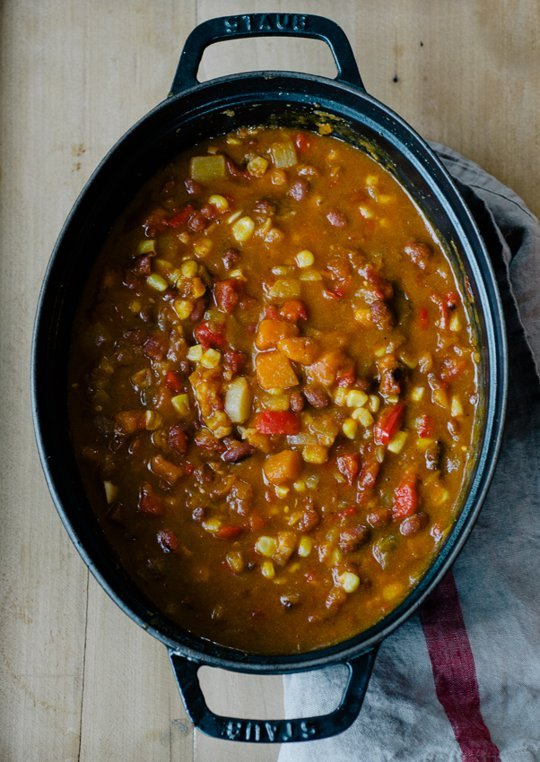

This recipe happened because my favorite cooking reference, Google, totally failed me. It was Halloween and I was inspired. Pumpkin chili was on the menu. One of our children was a vegetarian and it seemed like a wonderful, hearty solution. But I had no recipe and Google was no help. I even looked through actual cookbooks. Every version I found contained meat, pumpkin puree, or both. My vision was a meat-free dish with chunks of pumpkin. Goshdarnit, the pumpkin chili was happening, recipe or not. I decided to wing it.
But I'm sort of a chicken, so I called my friend Gabrielle, an actual chef with lots of experience in vegetarian kitchens, to ask if my idea was gross. I mean, if you can't find it on Google, maybe there's a reason. She thought it would work, and even responded with some enthusiasm, so I went for it. I added turnips for flavor and to lighten up the dish just a little. (I was also going through a turnip phase, and pretty much added turnips to everything.) The chili turned out to be a hit with everyone. Even the kids like it, and I'm glad to get something healthy into their stomachs before the onslaught of candy. Over the years, I've kept track of what went into the pot. The first time, I was sipping a little celebratory Halloween bubbly while I cooked, so the recipe wasn't exactly precise. Since then, pumpkin chili is our regular Halloween night meal, and we invite people to drop in for a bowl and help us hand out candy.
Our meat-eating friends never notice the lack of animal protein in my pumpkin chili. It can easily be made vegan, too, by adding extra olive oil to replace the butter, and serving dairy-free toppings in place of the cheddar cheese and sour cream, or skipping them entirely. The chili is also gluten-free, though you should check your ingredients just in case. (Some broths, canned goods and tomato paste can have sneaky gluten.) Speaking of broth, feel free to substitute chicken broth or whatever you have on hand if you aren't vegetarian. Heck, you can even crumble a little bacon over the top.
Serves 8 to 10
Vegan & Gluten-Free Pumpkin Chili: Substitute olive oil for the butter and offer dairy-free toppings to make the chili vegan. The chili is naturally gluten-free, as long as all prepared ingredients are gluten-free.
Storage & Freezing: This chili freezes well, but it's also a crowd pleaser, so we rarely have any left!